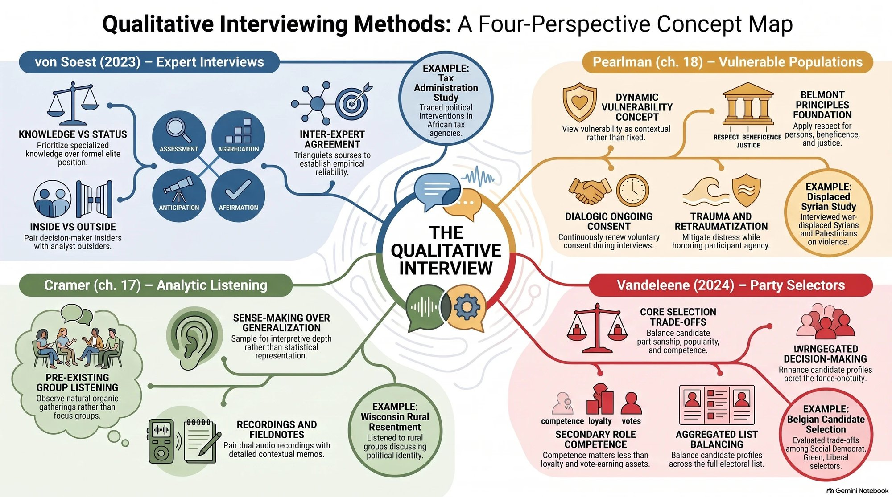
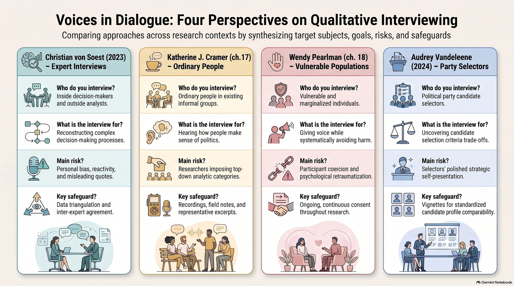
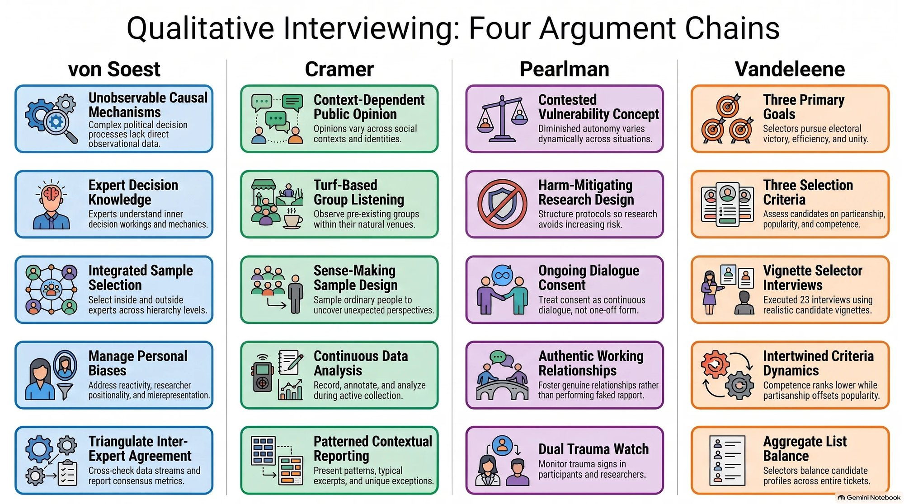

The Classroom · Qualitative Methods in Political Science · Week 5 · 23 Nov 2026
Interviewing
Who should we talk to, and how do we turn conversations into evidence? Von Soest makes the case for expert interviews as a window on causal mechanisms, Cramer shows what listening to ordinary people in their own groups can reveal, Pearlman asks what we owe people whose circumstances make them vulnerable, and Vandeleene's interviews with Belgian party selectors put it all to work.
1 At a glance 30 seconds
Key questions
- Who counts as an expert, and why should the answer turn on knowledge rather than status?
- How can interview evidence be made reliable when every respondent is biased, forgetful or performing?
- What do we learn by listening to people talk in their own groups that surveys and one-on-one interviews miss?
- When is it right to interview vulnerable people at all, and what does consent mean when the power gap is wide?
Key concepts
Expert (knowledge-based)
Anyone with specialized knowledge of, or involvement in, the process of interest. Selection should be problem- and expertise-centred, not status-oriented: an elite who does not know the process is not an expert. — von Soest (2023), after Dexter
Inside vs outside experts
Inside experts (actors) shaped the process and are primary sources; outside experts (analysts) study it and are secondary sources with the 'big picture'. Select both, and include mid- and low-level insiders. — von Soest (2023), Table 1
Assessment, aggregation, anticipation, affirmation
The four applications of expert interviews. Assessment, reconstructing events, is the most relevant and often gives process tracing its empirical basis; affirmation has a 'dark side' when experts are invoked selectively. — von Soest (2023)
Reactivity and subjectivity
The two core personal biases. Reactivity: the interview is relational and the interviewer's identity and questions shape answers. Subjectivity: purposeful or unintentional misrepresentation, subjective interpretation, lacking memory (the Rashomon effect). — von Soest (2023), Table 2
Internal triangulation and inter-expert agreement
Cross-checking interviews against each other (inside vs outside, leadership vs operational level) and reporting how far experts agree, so that quotes are situated in the whole corpus rather than cherry-picked. — von Soest (2023)
Analytic listening
Listening to how people talk about public affairs, ideally in the venues they normally inhabit and with the people they normally spend time with, and comparing across such settings to find patterns in their understandings. — Cramer (2024), ch. 17
Vulnerable populations
Participants whose characteristics or circumstances diminish their autonomy and make them susceptible to coercion or exploitation. The label is contested, so researchers can ask how the research itself creates or reduces vulnerability. — Pearlman (2024), ch. 18
Dialogic, ongoing consent
Consent as a continuing responsibility rather than a one-off form: state risks and benefits, acknowledge privilege, and invite participants to question and challenge the researcher. — Pearlman (2024), citing Lake, Majic & Maxwell
Tap a concept for its definition.
What you get out of it
- von Soest: expert interviews are a key tool for tracing causal mechanisms, but only if experts are selected purposefully, their biases are actively handled, and evidence is captured systematically. The evidentiary value of a single expert interview is 'close to zero'.
- Cramer: listening methods suit understanding how particular people interpret their world, not generalizing with known probabilities. Rigor comes from good questions, recordings, prompt field notes and presenting typical excerpts and exceptions with their context.
- Pearlman: research must at minimum not increase people's vulnerability. Consent, rapport and logistics all need rethinking under power asymmetry, and two questions stay open: interviewees who threaten us or whom we find loathsome, and the researcher's own vulnerability.
- Vandeleene shows elite interviewing at work: a broad opening question plus standardized vignettes make 23 selectors comparable and reveal that no selection criterion is self-sufficient.
Cases and evidence
- Political interference in African tax administrations von Soest (2023)
Over 150 semi-structured interviews; operational tax officers contrasted with agency leadership revealed firms owned by politicians that were never audited ('don't go to this man, this man is difficult'). - Five-minute survey experiment at NATO von Soest (2023), citing Hardt
Each interview began with a paper-and-pen experiment, combining standardized methods with expert interviews to curb social-desirability bias. - Rural resentment in Wisconsin Cramer (2024)
Listening to informal groups suggested resentment of cities among smaller and rural communities; she then went back to more rural places to test and deepen the finding. - Consent in a refugee camp Pearlman (2024), citing Bartolomei
People desperate for any help would 'agree to anything', which makes asking permission 'a farce' unless consent is made dialogic. - Belgian party selectors Vandeleene (2024)
23 selectors from PS, Ecolo and MR; competence weighs less than partisanship and popularity, criteria intertwine, and loyalty is a prerequisite for safe list positions.
The readings
| von Soest (2023) | Why Do We Speak to Experts? Reviving the Strength of the Expert Interview Method · pp. 277–287 A knowledge-based notion of experts, inside and outside experts in one framework, and concrete fixes for selection, bias and capturing evidence. |
| Cramer (2024) | Interviewing and Listening to Ordinary People (Cyr & Goodman ch. 17) · pp. 195–207 Analytic listening: join groups that already meet, sample for sense-making, record everything, and present patterns with their exceptions and context. |
| Pearlman (2024) | Interviewing Vulnerable Populations (Cyr & Goodman ch. 18) · pp. 208–221 A contested concept and its practice: initial steps, recruitment, logistics, consent, conducting interviews, trauma, and two open problems. |
| Vandeleene (2024) | The why of candidate selection: How party selectors handle trade-offs between party goals · pp. 73–84 In-class exercise: 23 selector interviews with vignettes on the trade-offs between partisanship, popularity and competence. |
Where this fits in the course
Last week set the ethical ground rules for fieldwork and made the case for ethnography. This week zooms in on the interview, the workhorse of qualitative data collection, from three angles: experts who know how decisions were made (von Soest), ordinary people making sense of politics (Cramer), and people whose circumstances make them vulnerable (Pearlman). Vandeleene's study of Belgian party selectors is the in-class exercise. Expert interviews feed the process tracing of week 3, and weeks 4–6 are the material for the written paper due 4 December.
- 1Research questions, concepts, and causal inference
- 2Cross-case methods: case selection and comparison
- 3Within-case methods: process tracing
- 4Ethics of field research; ethnographic research
- 5Interviewing
- 6Archival research
- 7Content and discourse analysis
- 8Final exam
2 Listen and look
Two takes on the same readings: pick the length that fits your commute.

Note: The lettering in the Vandeleene box 'Aggregated decision-making' is garbled; it means selectors balance candidate profiles across the whole list. 'Trianquiets sourses' should read 'triangulates sources'.


Note: Vandeleene's three party goals are unity, policy and victory (not 'efficiency'), and her ten vignettes were one-line statements about a single selection criterion, not full candidate profiles. 'Partiscanship' should read partisanship.
3 Test your understanding
4 quick questions, then 2 to answer in your own words. Nothing is saved or sent.
For von Soest (2023), a cabinet minister who knows little about the decision you are studying is:
He defines experts by knowledge, not status. Elites who are not knowledgeable about the process do not qualify as experts, and researchers should desist from selecting them.
Which application of expert interviews does von Soest call the most relevant, and the one that often provides the empirical basis for process tracing?
Assessment means experts reconstruct an event or set of events analytically, which is exactly what process tracing needs.
Cramer's 'analytic listening' differs from a focus group because:
Focus groups are convened by the researcher for the researcher's goals. Cramer asks permission to join groups that already gather, which changes the power, the agenda and the connections between participants.
Vandeleene presented selectors with ten one-line vignettes near the end of each interview. Why?
The vignettes ensured that even respondents who had not raised a criterion discussed it, and broadened the focus from personal to abstract issues.
Name von Soest's three recurring problems with expert interviews and one remedy for each.
1) Selection of experts: choose purposefully, combining inside and outside experts and including mid- and low-level insiders. 2) Personal biases: handle reactivity (reflect on positionality, use probes and reworded follow-ups, read nonverbal meta-data) and subjectivity (assess motives to distort beforehand, cross-check; combine with list experiments). 3) Capturing evidence: avoid the 'power of the good quote' by reporting inter-expert agreement and triangulating externally (other data) and internally (between expert groups).
Audit Vandeleene (2024) with von Soest: what does her design do well, and what would von Soest add?
Well: purposeful selection of selectors involved in recent selections across three parties, provinces, ages and genders; a semi-structured format with a broad opener and standardized vignettes for comparability; systematic coding in NVivo. Von Soest would ask her to treat selectors as inside experts prone to self-presentation, add outside experts (analysts) or documents for triangulation, report inter-expert agreement behind quotes, and reflect on how online (PS, MR) versus face-to-face (Ecolo) interviews may have shaped answers.
Podcasts and infographics are generated with Google NotebookLM from the course readings; the brief and quiz are drafted with Claude from the readings and syllabus. I curate what goes up, but AI-generated material can contain mistakes. Use these pages alongside the readings and seminars, and check anything important against the original texts.